Turning frontline experiences into collective input for national labour agreements.
TimelineFeb 2026 – Jun 2026ContextGroup Project · Academic · Client CollaborationWithMinisterie van Binnenlandse Zaken en Koninkrijksrelaties (BZK) · TU DelftMy roleField research · Concept Visualization · Prototyping · Implementation Roadmap
Context
Who reaches the table
The Ministry of the Interior (BZK) wants CLA negotiation to represent its entire workforce, including the “small voices” in salary scales 1-6.
1
2
3
4
5
6
7
8
9
10
11
12
13
14
15
16
17
18
Small voicesScales 1–6Salary scales 7–18
Our focus: below the surface
Lower-income employees remain disengaged and unheard in Collective Labour Agreement (CLA) negotiations. Current feedback channels fail to reach them within their specific work environments.
The disconnect makes participation feel irrelevant or futile, so their needs stay unrepresented, and the agreements that follow do not reflect the realities of the entire workforce.
Our Process
We mapped the CLA system through desk research, then tested our assumptions with employees on the work floor.
Client brief
Stakeholder mappingDesk researchCLA ecosystem and literatureField researchInterviews and the strikeHMW questions and assumptionsProblem reframingCOM-B modelConcept ideationStrategic directionsConcept prototypingValidation rounds with 16 employeesIteration and refinementFinal interventions
BZK systemic solution
01Discover
Desk research into the CLA ecosystem, stakeholder mapping, and field research at the 14 April strike and on campus.
02Define
A COM-B diagnosis, How Might We questions with the assumptions behind them, and the problem reframed.
03Develop
Three strategic directions, AI-assisted ideation and concept prototypes.
04Deliver
Seven rounds of validation with 16 employees, ending in one connected system instead of a set of separate touchpoints.
Research and definitionDesign and validation
The Underlying Problem
Field research
We tried the channels the system already uses. Almost nothing came back.
Digital surveys0 responses
Sent through employer and government channels
Reddit outreach0 responses
Posts in subreddits to recruit scale 1–6 staff
Strike contacts1–2 replies
From the 14 April strike in Rotterdam
At the strike, the same people talked to us openly for as long as we wanted. They weren't unwilling to speak. They just weren't going to do it through a form.
Field photo 1 field/field-1.jpg
Field photo 2 field/field-2.jpg
Field photo 3 field/field-3.jpg
The mismatch
The feedback system was designed for an employee who doesn't exist on the work floor.
Scales 1–6 are cleaners, security staff, transport workers and facility staff, and most of them are out in the field rather than at a desk.
Often no fixed workstation: work moves between sites, vehicles and shifts
Time
Shift work, with few quiet moments to stop and fill in a form
Access
Mostly a personal phone, often without easy access to work email or the intranet
Language
Often Dutch as a second language, so long written surveys become a barrier
Assumed user
Workplace
A fixed desk with a computer, where surveys arrive by email
Time
A quiet half hour in the working day to complete a survey
Access
Reliable connectivity and institutional channels at the desk
Language
Dutch as a first language, at ease with long written questions
The COM-B model
Access is only the first barrier. We used the COM-B model to ask why scale 1–6 employees don't take part, and found all three barriers sit in the process, not the people.
Capability
The channels don't fit the working day, the device or the language.
Ik kan me echt niet herinneren dat ik ooit zo'n vragenlijst heb ingevuld.
“I can't recall whether I ever filled in such a survey.”
Work feels transactional, and nothing visibly changes when people speak up.
Ze zeggen het is anoniem maar dan sturen ze toch een vervolg email van vul het eens in. Dan denk ik van hè: er klopt hier iets niet.
“They say that it's anonymous, but then you receive a follow-up email reminding you to ‘fill in the survey’. That's where I think: something's not right here.”
This wasn't a group that wouldn't participate. It was a system that hadn't been built for them.
Strategic Directions
No single intervention could close the gap we found. Three strategic directions emerged, each aimed at a different part of the system.
01Work floor
Rebuild the feedback experience
Rebuild the way employees give feedback.
Participation without union membership
Accessible channels
Meeting employees where they are
Question we took into testingCould a new role on the work floor build trust in the system?
02Discussion table
Manage and apply feedback in a new discussion format
Design beyond gathering data: shape how feedback is used at the discussion table.
Community-validated feedback data
Continuous feedback, beyond the CLA negotiations
Question we took into testingCould the process become visible to employees, so it no longer feels like a black box?
03Ministry
Ministry ↔ employee communication
Build the shared institutional voice that doesn't exist yet.
Close the loop with transparency for all
CLA changes reach the work floor
Question we took into testingCould communication in several formats close the feedback loop?
None of the three said what the answer would look like. That's what the next seven rounds were for.
Testing & Iteration
We tested in seven rounds, getting closer to the real user each time.
It began with a survey and a Reddit post that no one answered. From there, each round got us closer: first university staff doing similar work, then the cleaners, guards and transport staff across the Rijksoverheid.
At a distance · R1–R2
Round 01
Digital outreach
Before we’d spoken to anyone, we sent a digital survey through employer channels and posted a call for interviews on Reddit. The survey came back empty; moderators took the post down.
Our call for interviews, before moderators took it down.
What we learned
The barrier was access, not willingness
It confirmed the mismatch: the channels were built for the assumed desk worker, not the actual frontline worker
What we changed
Moved the starting point from online to the physical workplace
Kept digital, but as a supporting route (a QR code on a poster), not the way in
Round 02
Physical channels
So we started where people actually work: outreach posters for locker rooms and canteens, an anonymous feedback box, and a QR dashboard grouping input into themes.
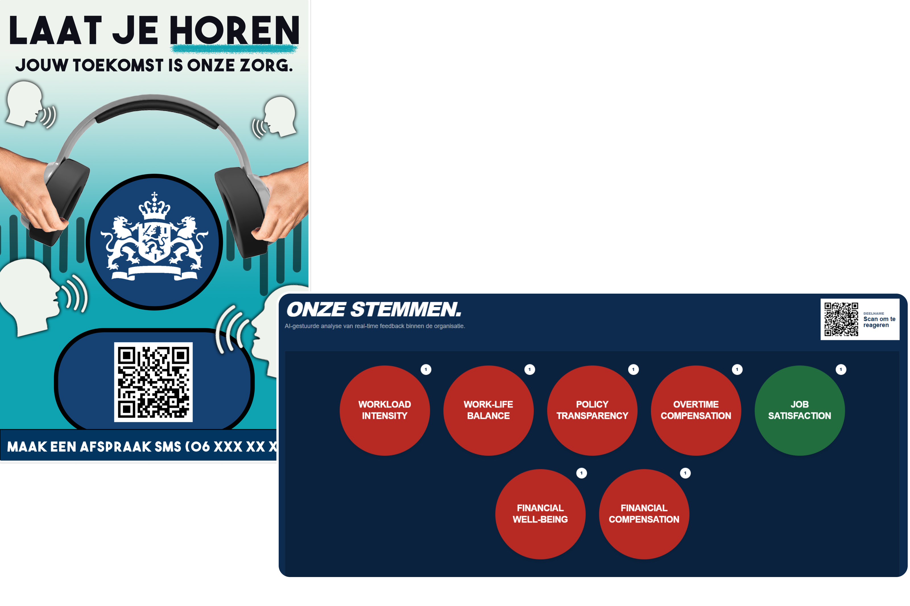
Fig 11 · Early posters and dashboard testing/round-02a.jpg
Early outreach posters and the first dashboard.
What we learned
These were separate touchpoints, not a system
The box asked what the survey asked: write your concern down yourself, and trust where it goes
What we changed
Stopped asking people to write, and looked for a way to let them talk instead
With government frontline staff still out of reach, turned to people in similar roles at TU Delft to test with
On campus · R3–R4
Round 03Turning point
On campus: the human pivot
We tested these concepts with four TU Delft frontline staff: cafeteria staff, receptionists and bike management.
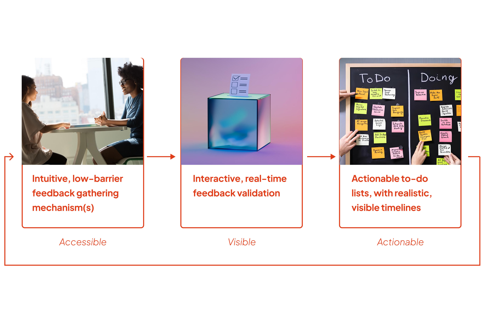
Fig 12 · System overview testing/round-03.jpg
Overview of the feedback system, making it accessible, visible, and actionable.
What we learned
Nobody wanted a better form
They wanted someone outside HR to talk to
Concerns go through the direct supervisor, so one bad supervisor can silence a team
What we changed
Introduced the werkcoach (work coach): a person on the floor who collects concerns in conversation
Added ping-pong-ball voting and quarterly sessions to close the loop
For the first time, the touchpoints worked as one system: accessible, visible, actionable
Round 04
On campus: trust and anonymity
We went back to TU Delft frontline staff with the whole system, including an AI chatbot and a working dashboard that showed votes as they came in.
9:41
NLENHallo, ik ben Alexje werkcoachEen veilige plek om eerlijk over je werk te praten.
Alles wat je deelt blijft vertrouwelijk en anoniem
Volledig anoniemWe verzamelen geen persoonsgegevens.OnafhankelijkJe werkgever heeft geen toegang tot jouw antwoorden.Waar wil je vandaag over praten?Vertel me wat er speelt…Begin gesprek Dit duurt meestal minder dan 5 minuten.
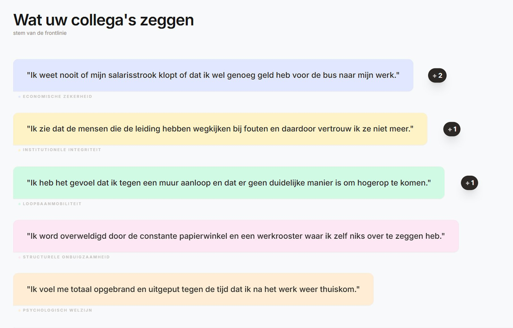
Working dashboard prototype · Google AI Studio screenshot testing/round-04a.jpg
The AI chatbot, and the working dashboard prototype built in Google AI Studio.
What we learned
The chatbot felt too impersonal for sensitive concerns
“Werkcoach” sounded too formal
Live vote counts made people fear being judged
What we changed
Delayed vote counts by 30 minutes
Decided the werkcoach needed a new name: less formal, and further from HR
Looked beyond the vote: people needed to see what happened to their feedback next
The vote-count worry only came up because the dashboard actually worked.
Refining · R5
Round 05
Refining the system
Back at the desk, the werkcoach became the People Partner, a name with more distance from HR. We also mapped the full quarterly cycle, from outreach and collection to publishing results and following up.
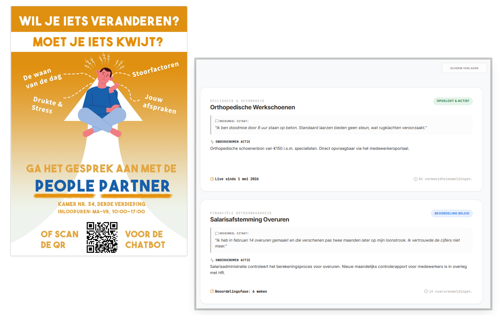
Fig 13 · Refined posters and dashboard with timeline testing/round-05.png
The new name on the poster, and the dashboard showing what happens to each issue, and when.
What we learned
A vote shows what matters to people. It doesn’t show them that anything happened next.
What we changed
Turned the most-voted issues into action items on the same dashboard
Gave each one a realistic timeline and a status: In progress, Resolved & active, or Under policy review
The ministry floor · R6–R7
Round 06
The ministry floor: security and transport
With the system refined, we left campus. For the first time, we tested with scale 1–6 Rijksoverheid employees: security and transport staff.
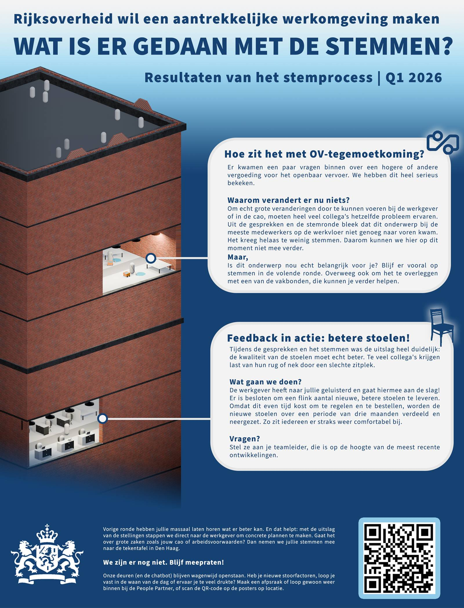
Fig 14 · Results flyer testing/round-06.jpg
Een flyer is lekker makkelijk.
A flyer is nice and easy.
The results flyer.
What we learned
The People Partner held up
The chatbot split opinion
Most would rather read a short printed summary than attend the quarterly session
What we changed
Made the chatbot optional rather than primary
Added the results flyer: the same action items and statuses as the dashboard, printed in plain Dutch
Round 07
The ministry floor: cleaning staff
A final round with cleaning staff tested the whole system, flyer included. The People Partner, voting station and posters all held up.
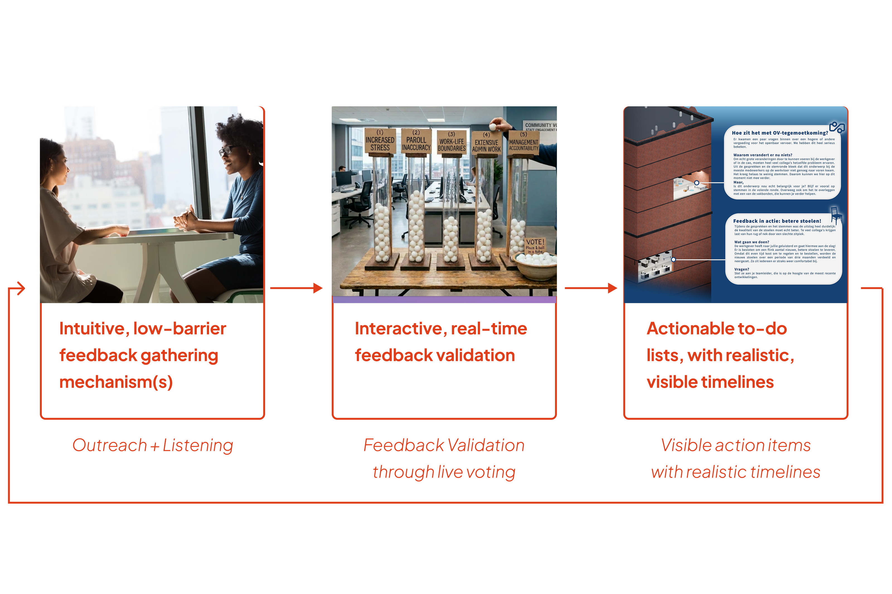
Fig 15 · Evolution of the system testing/round-07a.jpg
Where the system landed after seven rounds.
What we learned
Unlike security and transport staff, cleaning staff valued the quarterly session
For those whose first language isn’t Dutch, saying something out loud is easier than writing it down
What we changed
Kept the flyer, for those who’d rather read
Kept the session, for those who’d rather speak
What 12 scale 1–6 employees told us
Posters8/12
pay attention to posters at work
Posters showing emotion got more attention than posters full of information
People Partner9/12
prefer face-to-face over the chatbot
Being heard counts, even when little changes
Voting station10/12
would vote on the board
“Je krijgt wel het idee van wat ik gezegd heb is in ieder geval gehoord.”
“You get the idea that what I said has at least been heard.”
Quarterly session4/12
prefer a session over a flyer
“Één keer per kwartaal zou ik er wel voor over hebben.”
“I'd be willing to do it once a quarter.”
After seven rounds, a better channel was never going to be enough. What was needed was a feedback loop people could see.
The Feedback Loop
Six quarters, one loop
Problems at work come up all year. The CLA is negotiated roughly every 18 months, and input is only gathered in a short window before talks begin.
Today
Issues pile up all year, but only one survey before negotiations tries to capture them.
With the loop
Six quarters of documented, employee-driven evidence.
Q1Q2Q3Q4Q5Q6
CLA negotiations~18-month cycle
0102030405060708
Q1 · one quarterEmployeesScale 1–6
Outreach
People PartnerManagers
The People Partner puts up posters and walks the floor to invite people in.
1:1 conversation
EmployeesPeople Partner
Employees drop in to chat with the People Partner, who sits outside HR, or use the chatbot via QR.
Notes
People Partner
The People Partner writes each issue down by hand, without names, on a structured form.
Employee check
Employee rep
A colleague in the same role checks each note says what the employee meant.
Thematic analysis
Analysis tool
The analysis tool turns the checked notes into relatable themes for the dashboard, making them visible to every employee. Raw notes are deleted.
Vote
Employees
By QR with no login, or a ping-pong ball in a tube.
Quarterly session
EmployeesPeople PartnerManagersEmployee rep
Issues are sorted: quick fix, needs time, or needs higher approval.
Report back
BZK
Within 3–4 weeks, every issue gets a status on the dashboard and the flyer.
Resolved & active
In progress
Under policy review
An issue raised
Feedback collection
Voting phase
Quarterly session
Report back
On the floor
What the loop looks like to the people inside it, from the first poster to the printed flyer.
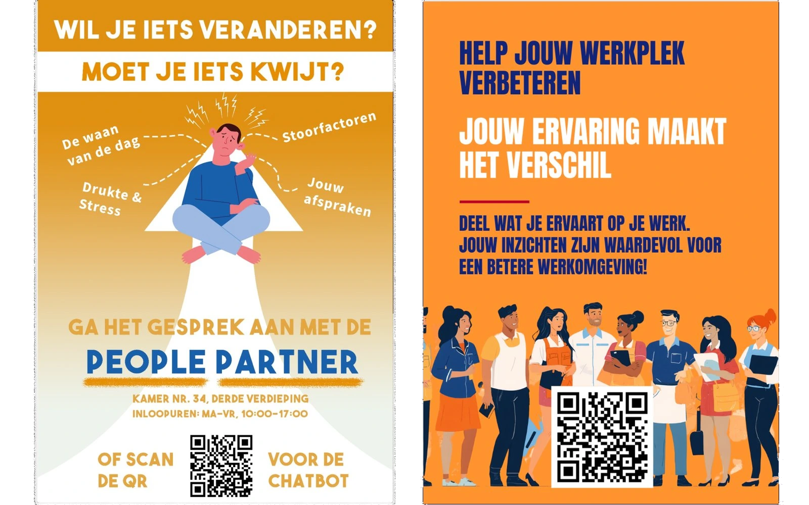
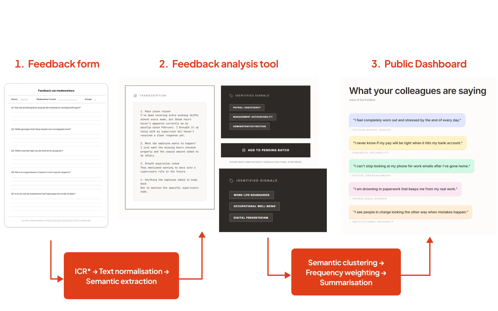
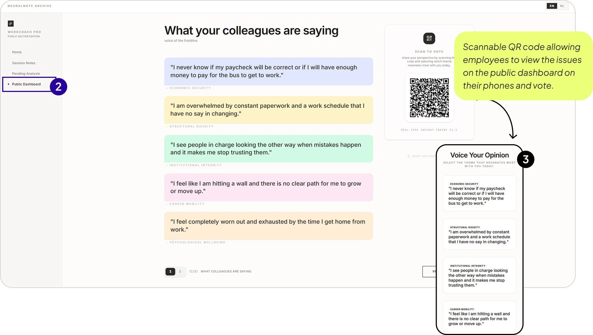
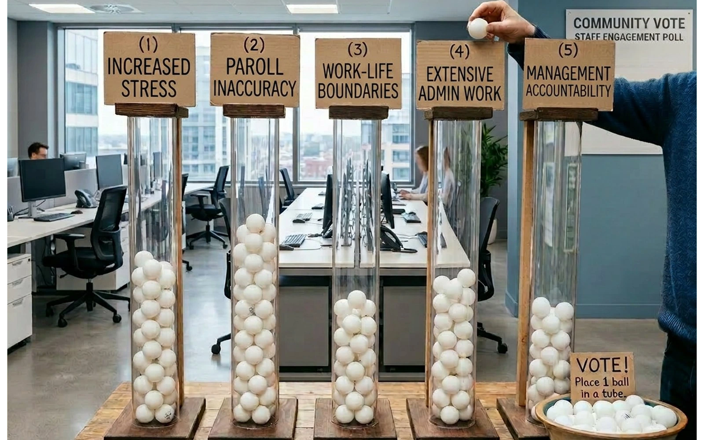
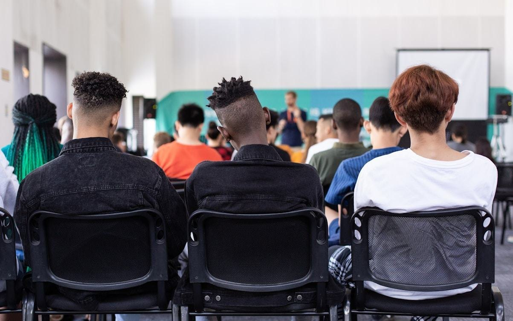
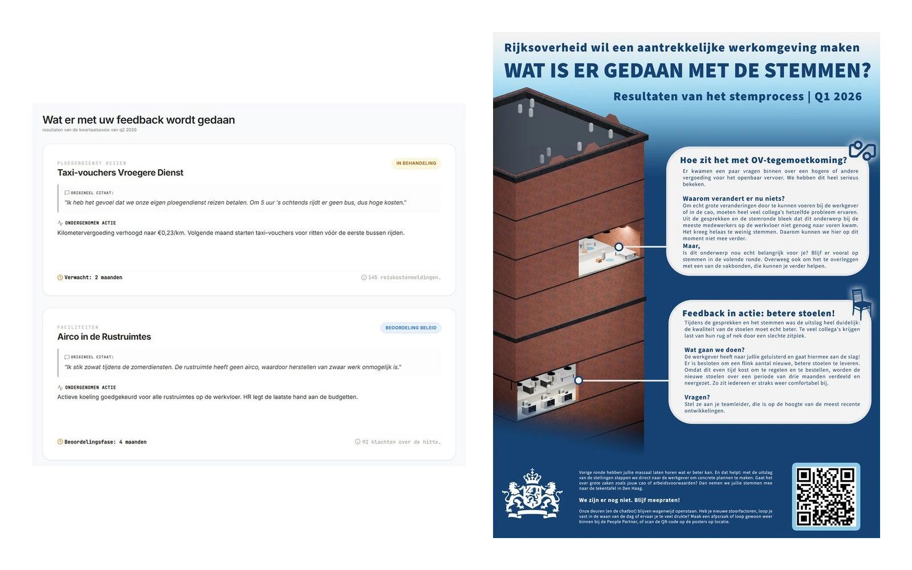
Concept visual
The People Partner distributes posters in common areas at the start of each quarter, and briefs managers
In plain Dutch, with their name, room, drop-in hours and a QR code to the chatbot
Emotion-led posters drew more attention than information-heavy ones; team leaders back it up at morning briefings
Creates a safe space to talk about daily work, concerns and ambitions; not HR, with no disciplinary role
Active on the floor, not behind a desk; employees drop in, or use the chatbot if they’d rather type
Notes concerns by hand, without names, and keeps them confidential
A colleague in the same role checks the notes reflect what was meant, before the structured form goes to the tool
Skills
Active listening
Empathy
Trust-building
Confidentiality
Knowledge of the CLA
Navigating power dynamics
The People Partner starts each run, and only checked notes go in
Reading: character recognition turns handwriting into text, which is cleaned up and scanned for key signals
Grouping: similar signals are clustered, weighted by how often they come up, and summarised as plain-language themes
Raw note images are deleted, and employees never see the tool
The People Partner publishes the key issues to the dashboard
Themes appear as employee voices: “What your colleagues are saying”
Scan the QR code and vote on your phone, with no login; counts update every 30 minutes, so no one in a small team can be identified by when they voted
The People Partner sets up and maintains the stations, and logs the counts on a whiteboard
Drop a ping-pong ball into the tube for the issue that matters most; the fill level shows priority from across the room
Open for four to five weeks, so every shift can take part
The People Partner rallies employees to join through posters, emails and the work app
Voted issues are reviewed together by employees, People Partners, managers and employee reps
Issues are prioritised together and sorted into:
Quick fixes: acted on now
Intermediate: need resources or cross-team alignment
Systemic: need higher-level approval, or the CLA table
Over time, this becomes quarterly input for CLA negotiations
The People Partner prints and hands out the “what happened with your input” flyers
Within three to four weeks, every issue gets a status, with an expected date where possible
On the dashboard and on a printed flyer in plain Dutch; both stay, because some people would rather read, others would rather speak
In progress
Resolved & active
Under policy review
What sets it apart
BZK’s annual engagement survey takes a snapshot. This loop keeps going, shifting the process from reactive to proactive.
It is continuous rather than periodic, embedded in the workplace rather than digital-first, and it closes the loop visibly instead of leaving outcomes unreported.
Desirability
Desirability over digital
Presence matters more than convenience. Digital tools support the conversation; they don’t replace it.
Feasibility
Realism over idealism
Every touchpoint fits existing shift routines. No one has to build a new habit.
Viability
Sustainability of participation
It runs every quarter, not only when negotiations are close.
Trust
Accountability without surveillance
Notes are the only record of individual input, and votes are only ever counted, never traced.
Implementation Plan
A system built on trust can’t launch everywhere at once. It starts in one building, with one People Partner, and earns the right to grow.
Five years
Year 1Pilot
The full loop tested in practice: People Partner, employee rep, voting station, first flyer.
~60employees · 1 ministry
Scale only if the pilot proves itself, and after a formal legal and ethics review.
Year 2Early adopters
Each site rebuilds its own voting station; digital voting tested alongside.
BZKmoves from running it to supporting it
~200employees · 2–3 ministries
Years 3–5Broader rollout
Themes start to show across ministries; physical and digital voting run side by side.
~700employees · ~half the Rijksoverheid
Year 5+Full deployment
Quarterly input feeds every CLA negotiation.
Allministries
↓ Zoom: Year 1 · The pilot · 6 months
Months 1–2Setup
Recruit the People Partner, find an employee rep, secure a room
Test the analysis tool on sample notes
BZKFacility managementICT
Months 2–3Outreach
Posters go up; the People Partner is on the floor collecting concerns
The rep checks notes before analysis
People PartnerEmployee rep
Months 3–4Voting
Voting stations installed; open for 4–5 weeks
The People Partner logs counts on a whiteboard
Facility managementPeople PartnerEmployees
Month 5Results
Issues sorted; the first flyer explains what can and can’t be done
At first, the flyer replaces a meeting
BZKpublishes the flyer under the ministry’s logo
Month 6Evaluate
Measure participation, theme accuracy and whether people felt safe
Write up what worked
Facility managementensures space and access
ICTsets up the infrastructure
What the pilot has to prove
The dashboard needs voices before people trust it, and people need to trust it before they speak. The People Partner’s conversations have to come first.
1→ReachThe outreach posters and manager encouragement translates into meetings with the People Partner.
2→UseThe voting channels are used freely, anonymously, and without fear of retribution- signalling what matters to people the most.
3→AccuracyThe themes generated by the AI are accurate and reflect the true concerns of the workforce.
4→ChangeAt least one issue is tracked and resolved and communicated through the flyer or dashboard with clear status updates.
5→TrustAn anonymous pulse check to gauge if employees felt it was separate from HR.
What success looks like, five years on
The pilot proves it works in one building. Long-term success is when it runs without anyone pushing it.
Before
Lower-scale voices reach the CLA table once every 18 months, filtered through union representation, with no structured evidence.
After
BZK receives quarterly signals from scales 1–6, documented and themed, ready for the table.
Feedback process
Self-sustaining
Employees keep taking part because the loop visibly closes each quarter, not because BZK reminds them.
Early, not urgent
Signals arrive from every ministry each quarter, so problems surface before they become urgent.
Evidence at the table
BZK arrives at negotiations with documented signals, alongside union input. The agreement reflects current realities, not the last cycle’s assumptions.
Legal & Ethical
A tool that listens to employees could just as easily be used to watch them. So we built ours to make sure it doesn’t.
Note / Chat
GDPR · Data minimisation (Art. 5)
Nobody is asked for their name. Mentions of health, race or union membership are removed as soon as a note comes in.
AI Act · Transparency (Art. 50)
Alex, the chatbot, tells people it’s an AI. The People Partner and managers say so too.
Whistleblower Protection Act
The People Partner explains up front that fraud or safety risks have to be reported, so nobody is promised secrecy that can’t be kept.
Rep check
GDPR · No automated decisions (Art. 22)
An employee representative reads every note before the AI does. Nothing reaches the board without a person signing it off.
Read
GDPR · Storage limitation (Art. 5)
The AI turns handwriting into text, then deletes the photo of the note, because handwriting can identify someone.
Themes
AI Act · Not high-risk (Art. 6(3))
The AI sorts notes into shared topics, like break-room seating. It never scores, ranks or builds a profile of any one employee.
AI Act · No emotion recognition (Art. 5)
The AI doesn’t try to judge how upset someone is. Its themes are drafts that reps check against the original notes.
Public board
GDPR · Identifiability (Recital 26)
Vote counts update every 30 minutes, not live, so colleagues in a small team can’t tell who just voted. Added after Round 4.
Before it scales, the system needs a proper legal review, starting with the AI Act risk assessment.
Impact & Outcomes
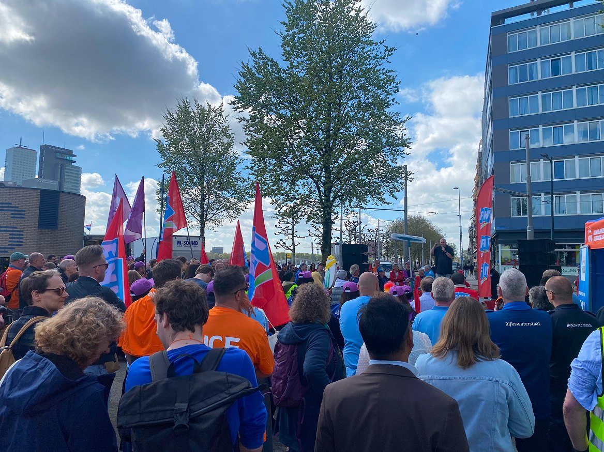
thumbnail.jpg
Our recommendation
Scale 1–6 employees need a trusted contact independent of HR to feel safe speaking up. The government must build on that trust by demonstrating its commitment to an inclusive workplace, where these voices are meaningfully represented at the negotiation table.
Meet them where they are
The first step is making the feedback process effortless to take part in. That means meeting the employees where they work, not expecting surveys to reach them.
From silence to trust
Trust isn’t built in a day, or by launching a new interface. A human face, the People Partner, shows employees that the employer is genuinely willing to listen.
Beyond one ministry
Scale 1–6 employees work across many ministries. Starting in one, and carrying its lessons to the next, lets the loop grow without losing what made it work.